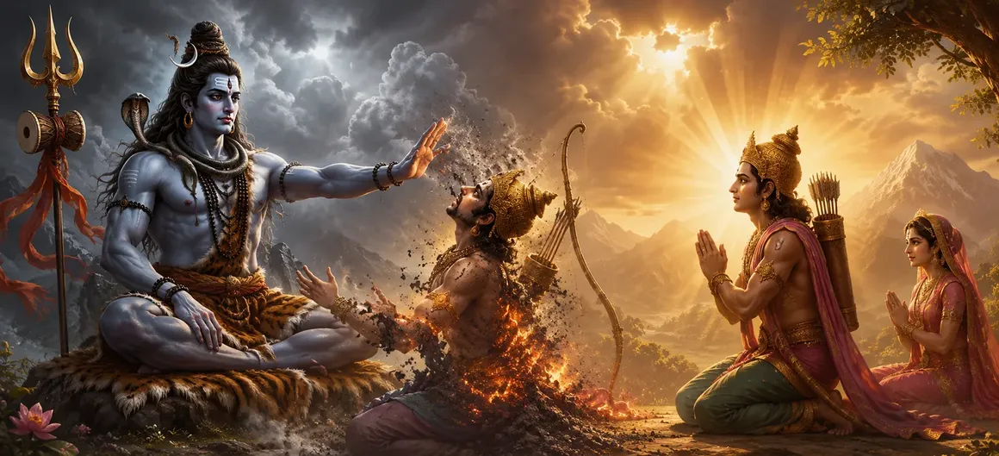

As Kāma approached the sacred abode of Lord Shiva, the fate of the universe rested upon his actions. The gods had entrusted him with a mission of immense importance—to awaken the divine union that would ultimately lead to the birth of a savior capable of defeating powerful forces of darkness. Yet the task before him was unlike any he had ever undertaken, for it required disturbing the meditation of the Supreme Lord Himself.
The events that followed became one of the most famous episodes in the Shiva Purana. What appeared to be a terrible punishment would ultimately reveal a profound spiritual truth. Through Kāma’s courage, sacrifice, and unwavering obedience to divine purpose, an apparent curse transformed into an eternal blessing remembered by devotees across the ages.
With great caution and reverence, Kāma entered the sacred region where Lord Shiva remained absorbed in deep meditation. The Supreme Yogi sat motionless, completely detached from worldly distractions. The sight filled Kāma with both awe and apprehension, yet he remembered the purpose for which the gods had sent him and resolved to proceed.
As Vasanta spread his influence, the region around Mount Kailasa blossomed with extraordinary beauty. Trees flowered, fragrant breezes drifted through the air, birds sang sweet melodies, and nature seemed alive with joy. The atmosphere became filled with the gentle energies of attraction and affection, preparing the stage for Kāma’s divine attempt.
Gathering all his courage, Kāma placed a flower-tipped arrow upon his celestial bow. With focused determination, he released the sacred arrow toward Lord Shiva. The divine missile carried not violence or harm but the subtle power of desire and emotional awakening. In that single moment, Kāma fulfilled the mission entrusted to him by the gods.
The sacred stillness surrounding Lord Shiva was briefly disturbed. For an instant, the balance between perfect detachment and worldly emotion appeared to shift. The gods watched anxiously from afar, knowing that the next event would determine not only Kāma’s fate but also the destiny of countless beings throughout the universe.
Kāma accepted a dangerous mission because it served a higher divine purpose.
Desire can influence creation itself, yet it must remain under divine guidance.
Even the strongest worldly influences cannot overcome the spiritual power of Lord Shiva.
The moment Lord Shiva became aware of the disturbance caused by Kāma’s influence, His divine anger manifested. Opening His third eye—the eye of supreme knowledge and cosmic power—He released a blazing fire capable of consuming all illusion. The heavens trembled as the energy radiated across creation.
The fire from Shiva’s third eye instantly consumed Kāma’s physical form. In a moment, the god of desire was reduced to ashes. The gods who had encouraged the mission stood in shock and sorrow, realizing the terrible consequence of disturbing the meditation of the Supreme Lord.
Rati, the devoted wife of Kāma, was overcome with unbearable sorrow upon witnessing the destruction of her husband. Her heart filled with grief as she lamented the loss of the one she loved. The heavens echoed with her cries, and even the gods were moved by her devotion and suffering.
Witnessing the sorrow of Rati and the consequences of the event, the gods approached Lord Shiva with humility. They explained the reason behind Kāma’s actions and pleaded for compassion. Acknowledging that the mission had been undertaken for the welfare of creation, they sought a way to restore hope and balance.
The story of Kāma teaches that divine purpose often requires sacrifice. What appears to be destruction may actually be transformation. Lord Shiva's actions were not motivated by anger alone but by a higher cosmic wisdom that ultimately brought blessings to both Kāma and the world. The chapter reminds us that the Divine sees beyond immediate events and guides all beings toward their ultimate good.
Moved by the prayers of the gods and the devotion of Rati, Lord Shiva revealed His compassionate nature. He explained that Kāma's destruction was not the end of his existence. Recognizing the selfless motive behind Kāma’s actions, Shiva granted him a unique blessing that would preserve his influence in the world despite the loss of his physical body.
Lord Shiva declared that Kāma would continue to exist in a subtle, bodiless form known as Ananga, meaning "the one without a body." Though invisible, he would retain the power to inspire love and attraction throughout creation. Thus, what began as a curse ended as a blessing, ensuring that Kāma’s influence would remain eternal. This sacred event became a symbol of how divine grace can transform apparent loss into everlasting significance.
"What appears as punishment in the eyes of the world may become a blessing through the grace of Lord Shiva."
Kāma has received both a curse and a blessing from Lord Shiva, revealing the profound mystery of divine justice and compassion. Continue to the next chapter to discover the story of Kāma’s marriage and the sacred events that follow.